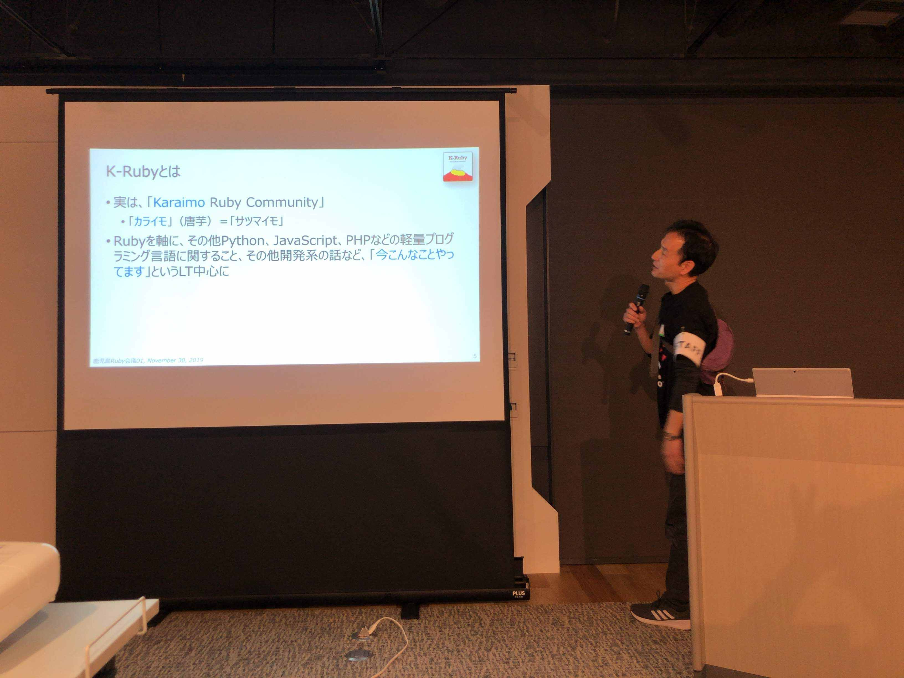
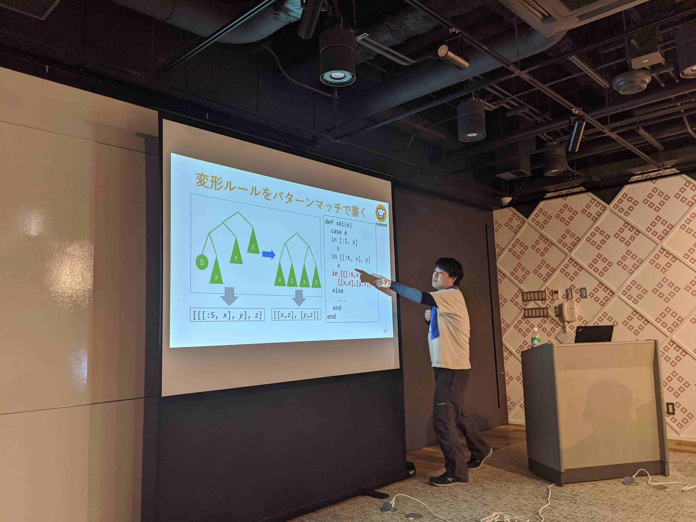
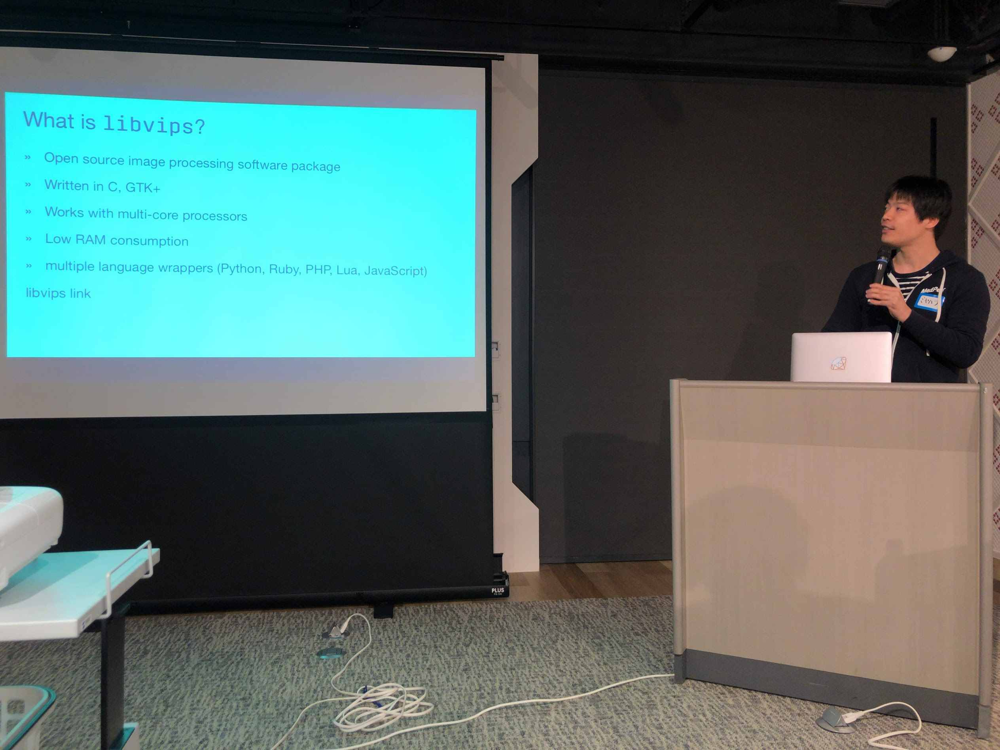
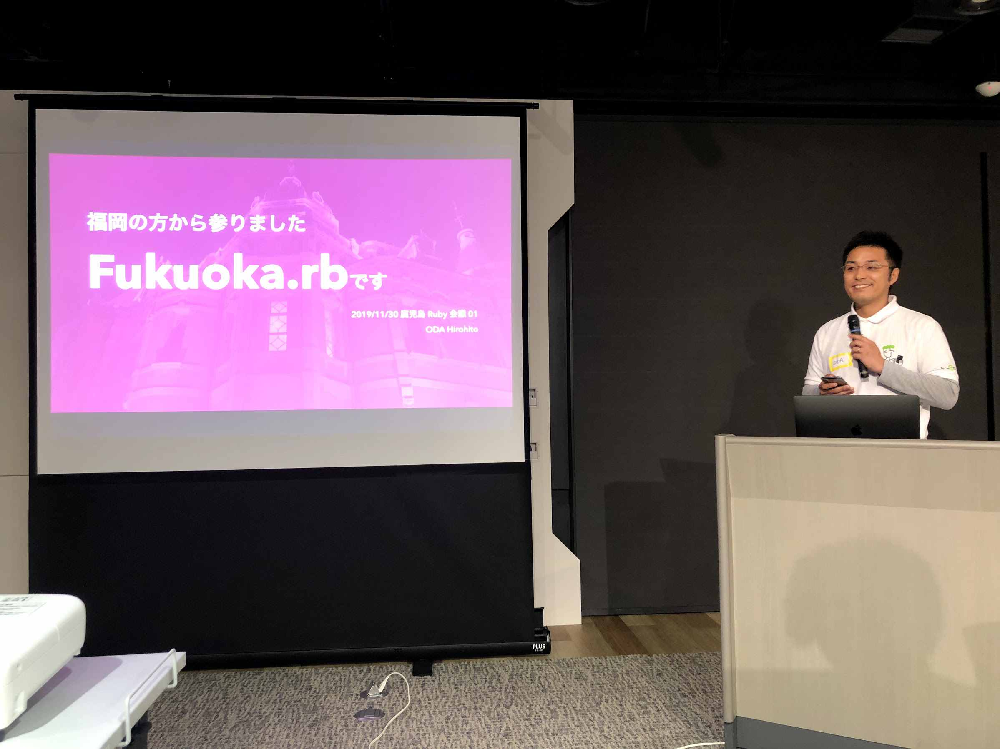
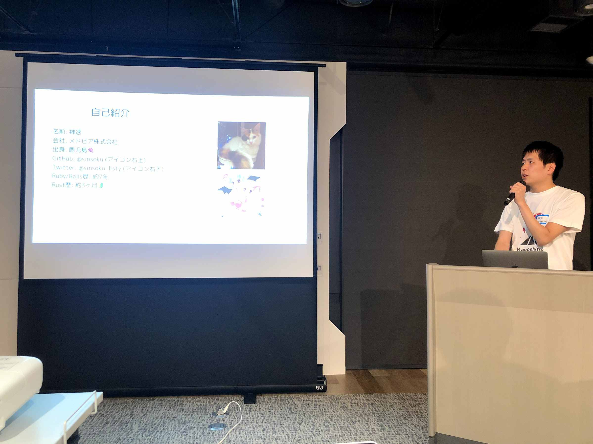
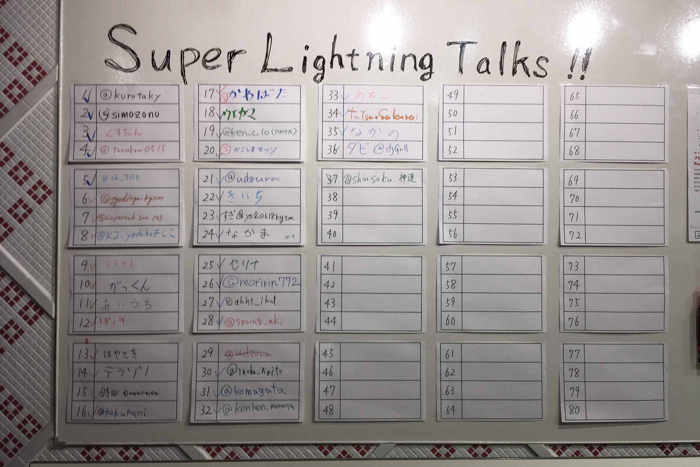

RegionalRubyKaigiレポート (79) 鹿児島Ruby会議01
初稿：2020-02-02
はじめに
鹿児島Ruby会議01の実行委員長を務めましたkurotakyです。2019年11月30日に鹿児島Ruby会議01が開催され、鹿児島だけでなく日本全国から多くのRubyistが集まりました。今回はその様子をレポートします。
K-Rubyについて
鹿児島Rubyコミュニティ（K-Ruby: Kagoshima Ruby Community） 2011/05/26 鹿児島でRubyのコミュニティを立ち上げました。プログラミング好きの集まりです。
開催概要
テーマ
プログラミング言語Rubyを通して越境する
開催日
2019-11-30（土）13:00 - 18:45
会場
主催
K-Ruby
参加者
約80名
公式サイト
公式タグ
セッションの内容について
シナプスの中野さんが書かれた鹿児島Ruby会議01に参加してきましたを見ると詳しく書かれています。今回のるびまのレポートでは一言コメントと一緒に写真多めで紹介します！
Opening
オープニングではK-Rubyの発起人であるtamochiaより、K-Rubyのこれまでのあゆみについて発表がありました。

実はKagoshimaのKではなく、Karaimo(唐芋)のKだったという衝撃の発表からはじまりました。
Ruby 3 の型解析に向けた計画（仮）[招待講演]
最初は招待講演でmametterさんのRuby 3 の型解析に向けた計画（仮）でした。 Ruby2.7で導入される新機能について、興味深いユースケースを交えて紹介していただきました。

bruby
田中さんのbrubyの発表です。 世の中の.shファイルを.rbファイルで置き換えるという実験的な試みに挑戦されていました。

ruby-jp
pockeさんはRuby界隈の大統一Slackワークスペースがほしいのエントリを書かれた方で、ruby-jpの話をされていました。鹿児島のRubyコミュニティの #k-ruby チャンネルもあるので、みなさん是非参加してみてください！

- ブログ: 鹿児島Ruby会議01に参加した
- 発表資料: ruby-jp
ruby-vipsを利用した画像処理Tips
ミヤハラさんによる、画像処理ライブラリlibvipsのラッパーであるruby-vipsに関する発表でした。 後半では導入事例についても解説いただきました。質問に対する補足説明に関して以下のブログで書かれていたので、気になる方はぜひ読んでみて下さい。

Haconiwaが越えたあの夏〜3年間を振り返る
udzuraさんが開発しているOSSのHaconiwaの発表でした。 さすがに10分で3年間振り返るのは結構大変だったと思いますので、次回開催時はぜひ基調講演でお願いします！

RubyのOSSコードリーディング
Osamtimizerさんの発表では、コードリーディングのやり方やOSSのコード読んでみて変わったことについての発表でした。 最近はGitHubでブラウザだけでもコードが読みやすくなっています。Rackのコードの話を読んだ実体験はこれからコードリーディングをしようとしている人の参考になると思いました！

- 発表資料: RubyのOSSコードリーディング
福岡の方から参りました Fukuoka.rb です
Fukuoka.rbから参加のODAさん。 Fukuoka.rbの歴史と変化についてされていました。今後OSSパッチ会などが福岡で開催されたら参加してみたいです！

- ブログ: 鹿児島 Ruby 会議 01 に行ってきた
- 発表資料: 福岡の方から参りました Fukuoka.rb です
かごっま弁のDeep LearningをRubyできばっ
tanaken0515さんの発表では鹿児島弁の機械学習をRubyでやりたいということで、DeepLearningの入門とRubyでどのように動かしていくか丁寧に解説していました。これからDeepLearningやってみようという方の参考になる発表でした。鹿児島弁は結構難しいので今後の展開に期待です！

How to make a gem with Rust
sinsoku_listyさんはRustでgemを作る方法について発表されていました。 サンプルはsinsoku/wasabiやsinsoku/rusty_railsで確認できます。Dockerで動かせるので便利ですね！

あまり知られていないRubyの便利機能
znzさんはあまり知られていないRubyの便利機能について、ひとつひとつ解説されていました。 普段あまり使わないメソッドなどリファレンスマニュアルに間違いなどを見つけたらrurema/doctreeにissueを立てたりPull requestを送りましょう！

- ブログ: 鹿児島Ruby会議01に参加して発表してきました
- 発表資料: あまり知られていないRubyの便利機能
“regional” wasn’t going to mean “provincial”
kakutaniさんの発表では地域Ruby会議について「RubyKaigiでできないことをどんどんやってくれ！」という言葉に勇気をもらいました。2019年は地域Ruby会議の開催が多かった年のようです。10分の発表だと整理しきれないボリュームだと思うので、次回の招待講演などで是非よろしくお願いします！

Rubyで作るネット回線の自動速度測定ツール
中野さんのRubyで速度測定ツールを作った話では、ISPの現場で必要とされる通信速度を計測するツールを開発した話でした。 中野さんは鹿児島Ruby会議01の開催日が誕生日でした。おめでとうございます！

- ブログ: 鹿児島Ruby会議01に参加してきました
- 発表資料: Rubyで作るネット回線の自動速度測定ツール
Location-based API with Ruby
ダビさんとヨヨさんは位置情報を用いたアプリケーションを作っていて、RailsからPostGISを利用する方法やマルチDBのお話をしてくれました。

Rails Girlsのお話や、初めての方向けのコミュニティについてなどお話[招待講演]
最後は招待講演のemorimaさんのRails Girlsなどのコミュニティの話でした。

発表資料: Rails Girlsのお話や、初めての方向けのコミュニティについてなどお話
closing
最後はみんなで集合写真を撮りました。県内外問わず多くの方が参加されました。

参加されたみなさま、スタッフのみなさま、ありがとうございました！
懇親会
懇親会では焼酎やさつま揚げなど鹿児島ならではの食事もあり、Fukuoka.rbの皆さまから日本酒の差し入れもいただきました。また、コーヒーブレイクでは鹿児島の010coffeeさんのコーヒーが提供されていました。朝早くから準備していただき、ありがとうございます！
Super Lightning Talksという発表したい人が名前を書いて、順番に自己紹介していくという企画も行ない、沢山の方に発表していただきました。

突然ライブコーディングをはじめる方もいました。各々が楽しめたようで良かったです。

emorimaさんの発表で紹介されていた#RubyFriendsもやりました。勢い余って写真がぶれていますが、雰囲気だけでも感じ取ってもらえると嬉しいです。

スポンサー
今回の開催にあたって、スポンサーになって下さった企業を以下に紹介します。 今回残ったスポンサー費用に関しては、鹿児島Ruby会議02の運営費用やRails Girls Kagoshima 1stの開催費用にて活用させていただきます。ありがとうございます。
スポンサーリスト
ツール提供スポンサー
参加者のブログ紹介
参加者で鹿児島Ruby会議01の感想を書いてくれている方がいたので、こちらで紹介します。
おわりに
2020年の6月頃にRails Girls Kagoshima 1stも開催予定となり、ますます盛り上がりをみせてきた鹿児島のRubyコミュニティ、これからも盛り上がっていくことを楽しみにしています！
著者について
@kurotaky GMOペパボ株式会社SUZURI事業部エンジニアリングリード、最近はethereum.rbのメンテナをしている。